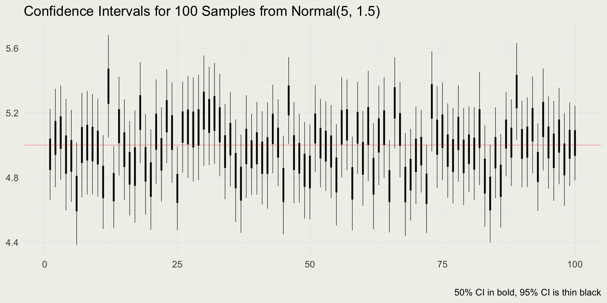

set.seed(1)
n <- 100; mu <- 5; sigma <- 1.5
x <- rnorm(n, mean = mu, sd = sigma)
x_bar <- mean(x); round(x_bar, 2)[1] 5.16[1] 0.15APSTA-GE 2006: Applied Statistics for Social Science Research
The material for this session is based on Chapter 4 of the Regression and Other Stories by Gelman et al.
\[ \DeclareMathOperator{\E}{\mathbb{E}} \DeclareMathOperator{\P}{\mathbb{P}} \DeclareMathOperator{\V}{\mathbb{V}} \DeclareMathOperator{\L}{\mathscr{L}} \DeclareMathOperator{\I}{\text{I}} \]
\[ x_i(t) = a + bt_i^2 + \epsilon_i \]

In a national survey of \(n\) people, how large does \(n\) have to be so that you can estimate presidential approval to within a standard error of ±3 percentage points, ±1 percentage points?
\[ \text{se}_{\text{diff}} = \sqrt{\text{se}_1^2 + \text{se}_2^2} \]
# Generate fake data
p <- 0.3
n <- 20
data <- rbinom(1, n, p)
print(data)
# Estimate proportion and calculate confidence interval
p_hat <- data / n
se <- sqrt(p_hat * (1 - p_hat) / n)
ci <- p_hat + c(-2, 2) * se
print(ci)
# Put it in a loop
reps <- 100
for (i in 1:reps) {
data <- rbinom(1, n, p)
p_hat <- data / n
se <- sqrt(p_hat * (1 - p_hat) / n)
ci <- p_hat + c(-2, 2) * se
print(ci)
}# Read data from here: https://github.com/avehtari/ROS-Examples
library("foreign")
library("dplyr")
pew_pre <- read.dta(
paste0(
"https://raw.githubusercontent.com/avehtari/",
"ROS-Examples/master/Pew/data/",
"pew_research_center_june_elect_wknd_data.dta"
)
)
pew_pre <- pew_pre |> select(c("age", "regicert")) %>%
na.omit() |> filter(age != 99)
n <- nrow(pew_pre)
# Estimate a proportion (certain to have registered for voting?)
registered <- ifelse(pew_pre$regicert == "absolutely certain", 1, 0)
p_hat <- mean(registered)
se_hat <- sqrt((p_hat * (1 - p_hat)) / n)
round(p_hat + c(-2, 2) * se_hat, 4) # ci
# Estimate an average (mean age)
age <- pew_pre$age
y_hat <- mean(age)
se_hat <- sd(age) / sqrt(n)
round(y_hat + c(-2, 2) * se_hat, 4) # ci
# Estimate a difference of means
age2 <- age[registered == 1]
age1 <- age[registered == 0]
y_2_hat <- mean(age2)
se_2_hat <- sd(age2) / sqrt(length(age2))
y_1_hat <- mean(age1)
se_1_hat <- sd(age1) / sqrt(length(age1))
diff_hat <- y_2_hat - y_1_hat
se_diff_hat <- sqrt(se_1_hat ^ 2 + se_2_hat ^ 2)
round(diff_hat + c(-2, 2) * se_diff_hat, 4) # ci# Distance from the bull's eye in cm
data <- c(8, 6, 10, 5, 18)
# Calculate the sample mean
mean_data <- mean(data)
# Calculate the standard error of the mean
se_mean <- sd(data) / sqrt(length(data))
# Degrees of freedom
df <- length(data) - 1
# Calculate the 95% and 50% confidence interval
ci_95 <- mean_data + qt(c(0.025, 0.975), df) * se_mean
ci_50 <- mean_data + qt(c(0.25, 0.75), df) * se_mean
# Output the results
mean_data |> round(2)[1] 9.4[1] 2.32[1] 2.97 15.83[1] 7.69 11.11\[ \text{p-valu}e(y) = \P(T(y_\text{rep}) >= T(y) \mid H) \]